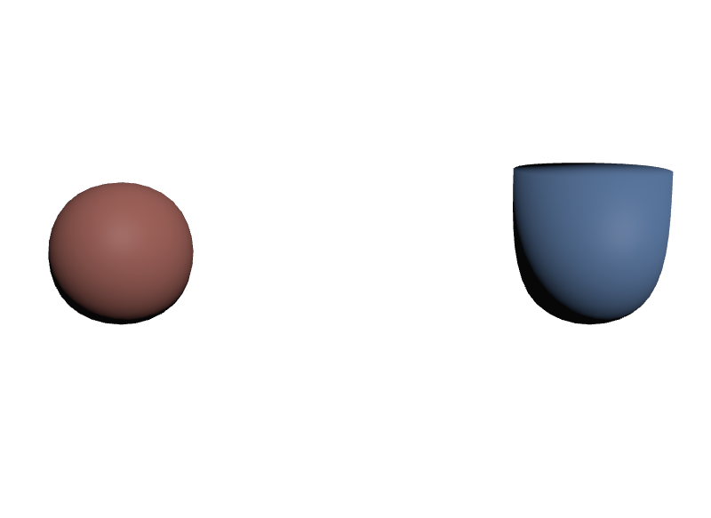

subdivisionScheme が none のまま crease を書く
細分化していなければ、そもそも丸くなりません。creaseは細分化されるMeshに対する指示です。noneのMeshでは何も起きません。
STEP 29 · SUBDIVISION CONTROLS
丸めたいが、全部は丸めたくないときに
今日これだけ
公式情報に基づく説明
STEP 26で、subdivisionScheme = "catmullClark"が箱を球に変えることを見ました。滑らかにできるのは便利ですが、実物には尖ったままにしたい辺があります。カップの縁、テーブルの角、機械の面取りなどです。
そのために、細分化の効き方を局所的に指示するAttributeが用意されています。大きく3種類です。
| 指定 | Attribute | 意味 |
|---|---|---|
| 辺を立てる | creaseIndices / creaseLengths / creaseSharpnesses | 指定した折れ線を尖らせる |
| 点を尖らせる | cornerIndices / cornerSharpnesses | 指定した点を尖らせる |
| 面を抜く | holeIndices | 指定したFaceを描かない |
さらに、境界やfaceVaryingのPrimvarを細分化でどう扱うかを決めるinterpolateBoundaryとfaceVaryingLinearInterpolationがあります。
USDA
def Mesh "Creased"
{
uniform token subdivisionScheme = "catmullClark"
int[] faceVertexCounts = [4, 4, 4, 4, 4, 4]
int[] faceVertexIndices = [
0, 1, 3, 2,
4, 6, 7, 5,
0, 4, 5, 1,
2, 3, 7, 6,
0, 2, 6, 4,
1, 5, 7, 3,
]
point3f[] points = [
(-0.5, -0.5, 0.5), (0.5, -0.5, 0.5), (-0.5, 0.5, 0.5), (0.5, 0.5, 0.5),
(-0.5, -0.5, -0.5), (0.5, -0.5, -0.5), (-0.5, 0.5, -0.5), (0.5, 0.5, -0.5),
]
# 上面の輪郭になる4辺を、1本の閉じた折れ線として指定する
int[] creaseIndices = [2, 3, 7, 6, 2]
int[] creaseLengths = [5]
float[] creaseSharpnesses = [10]
}3つの配列の読み方が要点です。creaseIndicesは点番号を折れ線としてつないだ並びで、creaseLengthsがそれを何点ずつに区切るかを決めます。STEP 25のfaceVertexCountsとfaceVertexIndicesの関係とまったく同じ形です。
ここでは[2, 3, 7, 6, 2]の5点を1本（creaseLengths = [5]）としています。最後にまた2へ戻っているので、上面をぐるりと囲む閉じた輪になります。creaseSharpnessesが尖り具合で、0で効果なし、大きいほど鋭くなります。10以上は「完全に尖る」と扱われます。
結果

creaseを指定しています。上の縁だけが立ち、側面と底は丸いままです。examples/lesson-83/subdiv-controls.usda / ソースからビルドしたOpenUSD v26.08のusdrecord --disableCameraLight --complexity veryhigh（Hydra Storm・Metal）/ macOS 26.5.2・Apple M4点を1つも増やさずに、形の一部だけを変えられました。これが細分化制御の効き方です。
Python
from pxr import Usd, UsdGeom
stage = Usd.Stage.CreateNew("m.usda")
mesh = UsdGeom.Mesh.Define(stage, "/M")
for name in ("interpolateBoundary", "faceVaryingLinearInterpolation",
"triangleSubdivisionRule", "creaseIndices", "creaseLengths",
"creaseSharpnesses", "cornerIndices", "cornerSharpnesses",
"holeIndices"):
attr = mesh.GetPrim().GetAttribute(name)
print("%-32s %-10s 既定=%r" % (name, attr.GetTypeName(), attr.Get()))interpolateBoundary token 既定='edgeAndCorner'
faceVaryingLinearInterpolation token 既定='cornersPlus1'
triangleSubdivisionRule token 既定='catmullClark'
creaseIndices int[] 既定=None
creaseLengths int[] 既定=None
creaseSharpnesses float[] 既定=None
cornerIndices int[] 既定=None
cornerSharpnesses float[] 既定=None
holeIndices int[] 既定=Nonecrease・corner・holeは既定がNone、つまり書かなければ何も起きません。一方interpolateBoundaryなどは既定値を持っていて、書かなくても効いています。
Diagram
creaseIndicesをcreaseLengthsで折れ線に区切り、creaseSharpnessesで強さを決めるcornerIndicesの点を、cornerSharpnessesの強さで尖らせるholeIndicesのFaceを描かない。点や面は消さない境界とPrimvarの扱い
| Attribute | 既定 | 意味 |
|---|---|---|
interpolateBoundary | edgeAndCorner（既定） | 端の辺と角を保つ |
edgeOnly | 端の辺だけ保つ。角は丸まる | |
none | 端も丸める。閉じていないMeshが縮む | |
faceVaryingLinearInterpolation | cornersPlus1（既定） | UVの角を保ちつつ滑らかにする |
none / all ほか | まったく滑らかにしない〜全部線形にする |
interpolateBoundaryは、閉じていないMesh（板や布など)で違いが出ます。既定のedgeAndCornerなら外周が保たれますが、noneにすると外周ごと丸まって縮みます。
faceVaryingLinearInterpolationは、STEP 36で扱ったfaceVaryingのPrimvar、つまり主にUVの扱いです。細分化すると面が増えるので、UVもそれに合わせて分割する必要があります。そのときに角を保つかどうかを決めます。
USDA → Python mapping
USDA
int[] creaseIndices = [2, 3, 7, 6, 2]↓Python
mesh.CreateCreaseIndicesAttr([2, 3, 7, 6, 2])USDA
int[] creaseLengths = [5]↓Python
mesh.CreateCreaseLengthsAttr([5])USDA
float[] creaseSharpnesses = [10]↓Python
mesh.CreateCreaseSharpnessesAttr([10])USDA
int[] cornerIndices = [0]↓Python
mesh.CreateCornerIndicesAttr([0])USDA
int[] holeIndices = [3]↓Python
mesh.CreateHoleIndicesAttr([3])USDA
uniform token interpolateBoundary = "edgeOnly"↓Python
mesh.CreateInterpolateBoundaryAttr(UsdGeom.Tokens.edgeOnly)Beginner notes
よくある間違い
細分化していなければ、そもそも丸くなりません。creaseは細分化されるMeshに対する指示です。noneのMeshでは何も起きません。
sum(creaseLengths)とlen(creaseIndices)が一致していないと、正しく解釈されません。
0は「効果なし」です。尖らせたいなら正の値、完全に尖らせたいなら10以上にします。
holeIndicesは描かないだけで、topologyからFaceを削除しません。faceVertexCountsの要素数は変わらないので、uniformのPrimvarの個数も変わりません。
外周ごと丸まって縮みます。板や布では既定のedgeAndCornerのままにします。
Glossary
creaseIndices・creaseLengths・creaseSharpnessesの3つで表す。cornerIndicesとcornerSharpnessesで表す。edgeAndCorner。faceVaryingのPrimvar（主にUV）を細分化でどう扱うかを決めるAttribute。既定はcornersPlus1。Official references
確認日: